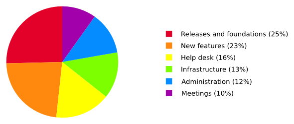

In our last post we explained why we need donations. Today we're telling you more about how we use these donations.
In 2015, we spent around 184 000€, distributed as follows:

Even without building anything new in Tails, publishing our releases every 6 weeks is a lot of work as it also implies fixing the problems found in previous versions, documenting the changes, migrating to newer versions of Debian, GNOME, and Tor Browser, and making sure that the foundations of Tails stay relevant. As the schedule of emergency releases is unpredictable, they are hard to fund through grants and we instead usually rely on donations.
Developing new features is not the biggest share of our budget. They are almost exclusively covered by grants or developed by volunteers. Since 2015, new features that were not funded by grants included:
- Integrating the Electrum Bitcoin client.
- Replacing Vidalia with Onion Circuits.
- Continue working on a new version of Tails Greeter.
- Mentoring a Google Summer of Code on Tails Server to allow running onion services from Tails (websites, collaboration tools, etc.).
- Adding an offline mode that disables all networking.
- Adding support for
obfs4Tor bridges. - Writing numerous additions to our website and documentation.
Our help desk is helping hundreds of Tails users each month. Each user request costs us 6€ on average to proceed. In 2016 our help desk was paid entirely out of donations.
Organizing our own meetings and attending conferences in our field is critical to keep our community alive and relevant. But this is usually hard to get funded by grants, so donations help us a lot here. Since 2015, we attended more than 15 international conferences on free software (DebConf), Internet freedom (IFF), hacking (32C3), human rights (RightsCon), and journalism (Logan CIJ). And organized more than 10 internal in-person meetings and development sprints.
In 2015, we worked a lot on infrastructure, for example to write an automated test suite to verify continuously the well-functioning of our ISO images, to automate the build of development ISO images for testing, etc. This work is invisible to the user but, for example, makes it much faster to publish emergency releases when we discover serious bugs.
Keeping Tails successful also implies quite a bit of administration to raise funds, do accounting, organize work, write reports, etc.
Since 2015, we added Farsi and Italian translations to our website and worked on the prototype of a web translation platform to allow more translators to contribute and more diverse people to use Tails.
If you like our work, please take one minute to keep Tails alive.